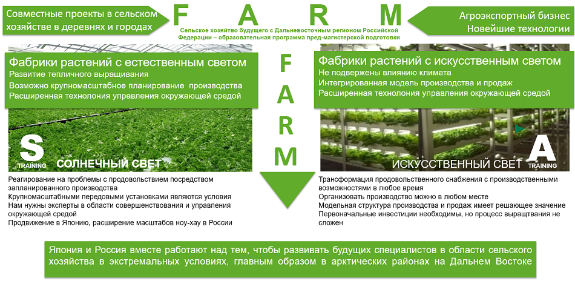

О проекте
FARM - Future Agriculture with Far east Russia Pre-Master to PhD Program
(Сельское хозяйтво будущего с Дальневосточным регионом Российской Федерации – образовательная программа пред-магистерской подготовки)
Эта программа готовит ведущих специалистов для развития сельско-хозяйственной отрасли. «Сельское хозяйство будущего» включает в себя обучение высокотехнологичному садоводству с использованием теплиц, а также работе с применением искусственного освещения на фабриках растений. Участники программы обучаются различным направлениям, такими как сельскохозяйственная инженерия, маркетинг продуктов питания, выращивание культур и контроль окружающей среды.
